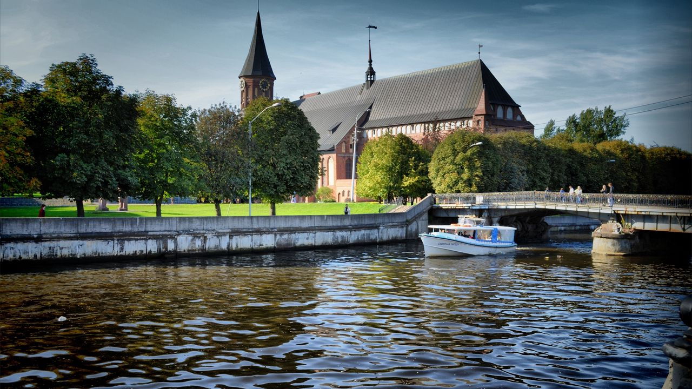

Калининград

Калинингра́д — город в России, административный центр Калининградской области
Являющийся самым западным областным центром Российской Федерации
Почему стоит посетить этот город?
Обилие довоенных зданий создает уникальный и неповторимый архитектурный облик города.
Путешественники, внезапно оказавшиеся в Калининграде, могут стать зваными гостями ошеломительных достопримечательностей,
представленных Музеем Мирового океана, Музеем Гофмана, а также Музеем Янтаря.